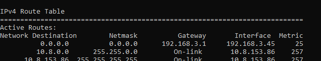
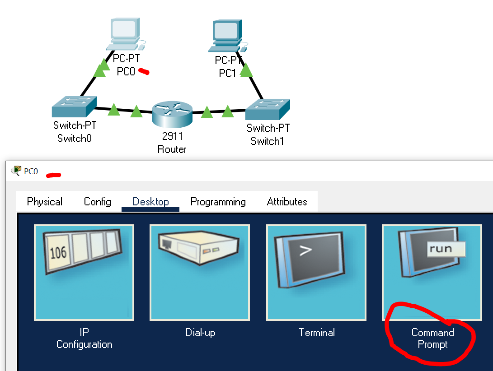

Use the course chatbot and the references provided to answer the following questions and solve the following problems.
Preboot Execution Environment (PXE) compliant Network Interface Cards have been used for diskless workstations, also known as thin clients. reference: PiServer
(50) 1. List at least one benefit of a PiServer-type PXE setup when controlling numerous Internet of Things (I0T) devices.
(50) 2. What organization or person(s) is/are primarily responsible for the design and structure of the Internet?
(50) 3. Some of the new protocols such as Internet Protocol version 6 are not including any kind of error-detection scheme on the data portion of the packet. What is the significance of this trend?
Find and research material on Switching Loops, Broadcast Storms, Bridging Loops and Spanning Tree Protocol.
(50) 4. Reflect on the concept of broadcast storms and packets 'living forever'. At the router level, list another device or tool that is used to prevent data packets from circulating forever on the Internet.
You are working for a company that wants to begin electronic data interchange (EDI) with two other companies that supply parts. Your company produces mobile telephones, and the other two companies produce batteries and telephone keypads. When your company places an order with the battery company, it specifies battery size, type, power and quantity. When your company places an order with the keypad company, it specifies keypad configuration, power consumption, dimensions and color.
Use this Access database, Summative08.accdb, to enter data for an order, and export the results as an xml file. Save this file as Summative08EDI.xml, then print as a .pdf file, EDI8.pdf
(50) 6. Save your file 'EDI8.pdf in your ' ' folder, and upload a copy to the D2L 'Summative08' Assignment folder.
A data frame for an HTTP request is shown below.
(50) 7. Open a command prompt window. Use the Snipping Tool to make a screenshot of the command window showing the results of the route print command.  Note: you do not have to capture all lines, the first 20 lines are sufficient. Reflect on the purpose of the route print command.
route print
Save the screenshot as "Ex1" in your ' ' folder. You will be combining screenshots from several exercises at the end of this assignment, just as you did in Formative00-PDF File Creation.
Open Packet Tracer and save a copy of your lab files to your folder.
Investigate and examine the results of a switching loop. When done, answer the question below.
Answer the following question. (50). 8. Is the packet from PC0 eventually delivered to Server0?
It may help to press the 'Capture Then Forward' button several times to speed up the connection process.
Open Packet Tracer and configure a Switch VLAN. When done, answer the questions below.
Open the PC1 Command Prompt window click PC1, click the Desktop tab, click Command Prompt as shown below.

Click the 'Realtime' button before you execute the ping command. You will see results faster.
ping
(100) 9. Use the Snipping Tool to make a screenshot of the PC1 command prompt window showing the failed PC1 to PC3 ping attempt. Save the screenshot as "Ex2" in your ' ' folder. You will be combining screenshots from several exercises at the end of this assignment, just as you did in Formative00-PDF File Creation.
Open Packet Tracer and configure a router to communicate between VLANs. When done, answer the questions below.
(100) 10. Use the Snipping Tool to make a screenshot of the PC1 command prompt window showing the successful PC1 to PC3 ping attempt. Save the screenshot as "Ex3" in your ' ' folder. You will be combining screenshots from several exercises at the end of this assignment, just as you did in Formative00-PDF File Creation.
Use a web browser to verify that you have published your website to https://classes.winona.edu/... Check that your name, StarID, email, class, semester, section and all of your answers are correct and visible. From the menu choose File>Print... and using "Microsoft Print to PDF" save a copy of this assignment as a .pdf file in your ' ' folder.
(50) 11. Save your file 'WebPage.pdf' to the ' ' folder.
Create one .pdf (portable document format) file from the screenshots that you have taken by following these steps.
(50) 12. Save your file 'ScreenShots.pdf' in your ' ' folder.
Use PDFill to merge the WebPage.pdf file, and EDI8.pdf with the ScreenShots.pdf file, and save it as 'Summative08.pdf' in your ' ' folder.
(50) 13. Upload your file 'Summative08.pdf' to the D2L 'Summative08' Assignment folder.
Use a browser to view your completed and published website at: https://classes.winona.edu/... Ensure that you have linked this assignment on your home page. Note that your screenshots do not have to be completed to perform this step.